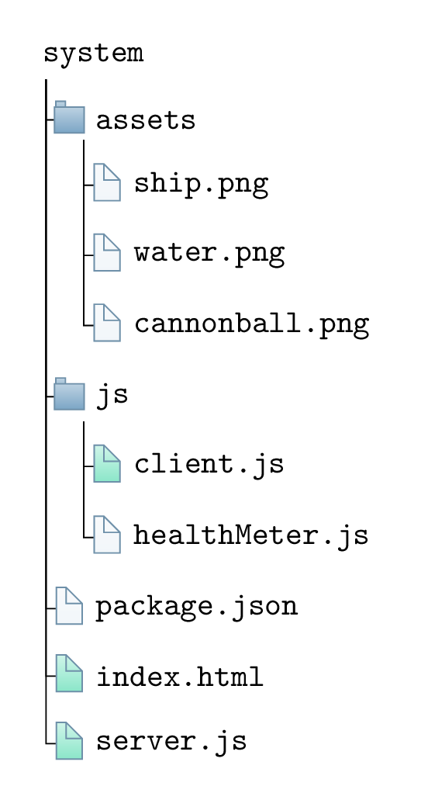

\documentclass[border=10pt,multi,tikz]{standalone}
\usepackage[edges]{forest}
\definecolor{folderbg}{RGB}{124,166,198}
\definecolor{folderbg3}{RGB}{24,206,148}
\definecolor{folderborder}{RGB}{110,144,169}
\def\foldedpaper#1{
\tikz[scale=#1,line width={#1*1pt}]{
\def\a{1.41} % relative height
\def\b{0.2} % relative height/width of corner
\def\c{0.1} % relative margin width (on either side)
\def\d{0.05} % vertical offset of lines
\def\N{6} % number of lines
\draw (0,0)
-- ++(-1,0)
-- ++(0,\a)
-- ++(1-\b,0)
-- ++(\b,-\b)
-- cycle;
\foreach \lnum in {1,...,\N}{
\pgfmathsetmacro\yline{\a-\d-\lnum*\a/(\N+1)}
\draw (-1+\c,\yline) -- (-\c,\yline);
}
\draw[fill=white] (0,\a-\b) -- ++(-\b,0) -- ++ (0,\b);
}
}
\newlength\Size
\setlength\Size{4pt}
\tikzset{%
folder/.pic={%
\filldraw [draw=folderborder, top color=folderbg!50, bottom color=folderbg] (-1.05*\Size,0.2\Size+5pt) rectangle ++(.75*\Size,-0.2\Size-5pt);
\filldraw [draw=folderborder, top color=folderbg!50, bottom color=folderbg] (-1.15*\Size,-\Size) rectangle (1.15*\Size,\Size);
},
file/.pic={%
\filldraw [draw=folderborder, top color=folderbg!5, bottom color=folderbg!10] (-\Size,.4*\Size+5pt) coordinate (a) |- (\Size,-1.2*\Size) coordinate (b) -- ++(0,1.6*\Size) coordinate (c) -- ++(-5pt,5pt) coordinate (d) -- cycle (d) |- (c) ;
},
file2/.pic={%
\filldraw [draw=folderborder, top color=folderbg3!20, bottom color=folderbg3!50] (-\Size,.4*\Size+5pt) coordinate (a) |- (\Size,-1.2*\Size) coordinate (b) -- ++(0,1.6*\Size) coordinate (c) -- ++(-5pt,5pt) coordinate (d) -- cycle (d) |- (c) ;
},
none/.pic={%
},
}
\forestset{%
declare autowrapped toks={pic me}{},
pic dir tree/.style={%
for tree={%
folder,
font=\ttfamily,
grow'=0,
},
before typesetting nodes={%
for tree={%
edge label+/.option={pic me},
},
},
},
pic me set/.code n args=2{%
\forestset{%
#1/.style={%
inner xsep=2\Size,
pic me={pic {#2}},
}
}
},
pic me set={directory}{folder},
pic me set={file}{file},
pic me set={file2}{file2},
pic me set={none}{none},
}
\begin{document}
\begin{forest}
pic dir tree,
where level=0{}{% folder icons by default; override using file for file icons
directory,
},
[system
[assets
[ship.png, file
]
[water.png, file
]
[cannonball.png, file
]
]
[js
[client.js,file2
]
[healthMeter.js, file
]
]
[package.json, file
]
[index.html, file2
]
[server.js, file2
]
]
\end{forest}
\end{document}Created by David Li